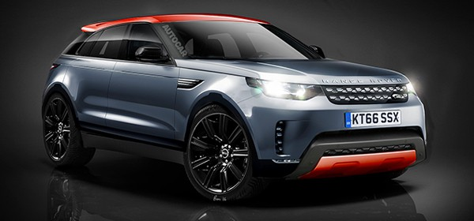
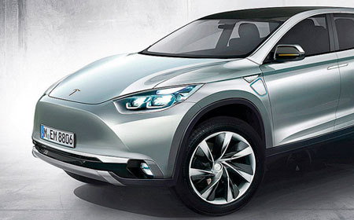
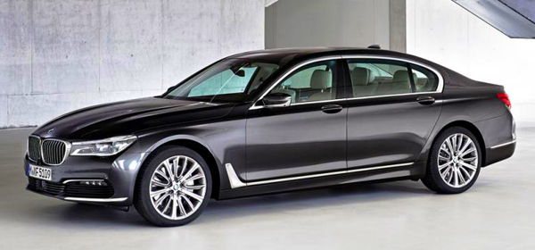
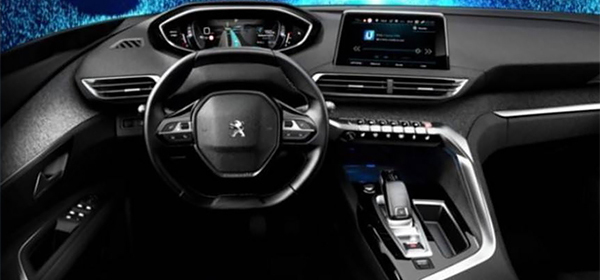
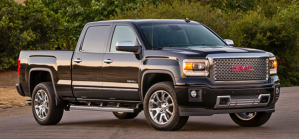

| НОВОСТИ | ГАЛЕРЕЯ | ОТЗЫВЫ |
|  |
Land Rover анонсировал конкурента BMW X6 Компания Jaguar Land Rover разработает новый спортивный кроссовер, сообщает Autocar. Автомобиль получит индекс L560 и в будущем составит конкуренцию BMW X6. Серийная версия новинки может появиться на мировом рынке под названием Range Rover Sport Coupe. В модельном ряду компании кроссовер займет место между Evoque и Range Rover Sport. |
|
Компания Tesla планирует выпустить электрический пикап Американская компания Tesla планирует разработать свой первый в истории пикап, сообщает Autobild. Новинка будет ориентирована, прежде всего, на американский рынок. Основными конкурентами автомобиля называют Ford F-150, Dodge Ram и Chevrolet Silverado. |  |
|  |
BMW остановила продажи 7-Series в США из-за неисправных подушек безопасности Компания BMW приняла решение остановить продажи седанов 7-Series в США, сообщает World Car Fans. На такое решение руководство бренда пошло из-за выявленного дефекта, который может привести к несрабатыванию подушек безопасности в случае ДТП. |
|
Рассекречен салон нового Peugeot 3008 В сети появились фотографии салона компактвэна Peugeot 3008 нового поколения. Изображения интерьера автомобиля было опубликовано изданием Automobile-magazine. Судя по фотоснимкам, машина получит новую приборную панель и другой сенсорный дисплей. |  |
|  |
General Motors отзывает более миллиона пикапов по всему миру Концерн General Motors объявил об отзыве более миллиона пикапов по всему миру. Сервисная акция коснется Chevrolet Silverado и GMC Sierra, которые были выпущены в 2014 и 2015 гг., сообщает пресс-служба концерна. В указанных автомобилях был обнаружен дефект ремней безопасности |